Setting up your environments
Outline
- General Mac environment
- Mac preferences
- Terminal
- ...
Step 1 - Setup iCloud
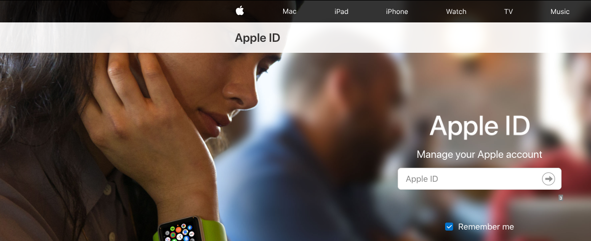 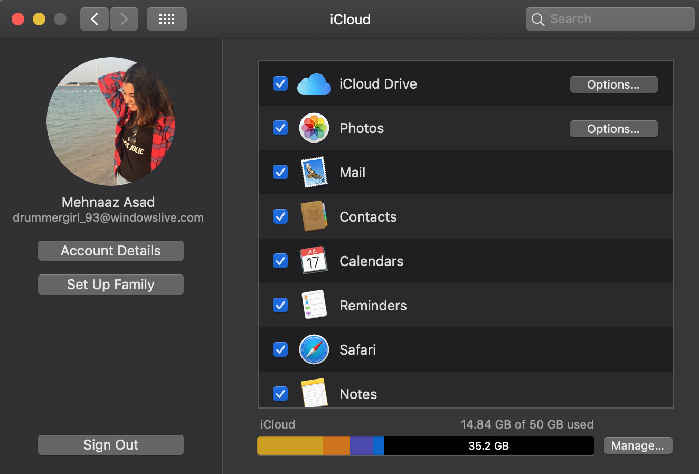This is the account associated to your Apple products!
Step 2 - Software Update
Step 2 - Software Update
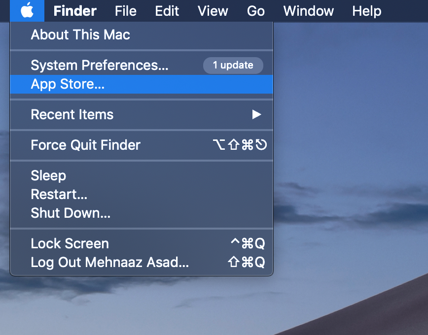Step 2 - Software Update
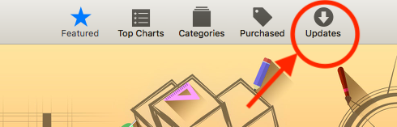and now update all of the softwares!
Step 3 - Preferences
Step 3 - Preferences
Check out the trackpad and adjust it to fit
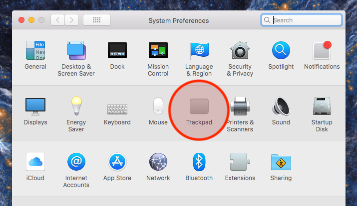Step 3 - Preferences
Check out the trackpad and adjust it to fit
- You can:
- Change tracking speed
Step 3 - Preferences
Check out the trackpad and adjust it to fit
- You can:
- Change tracking speed
- Customize gestures
Step 3 - Preferences
Check out the trackpad and adjust it to fit
- You can:
- Change tracking speed
- Customize gestures
- Control the "zoom"
Step 3 - Preferences
Customize your desktop appearance
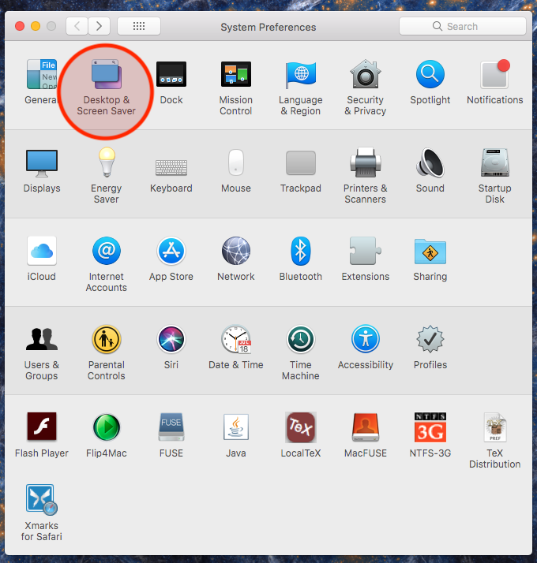Step 3 - Preferences
Customize your desktop appearance
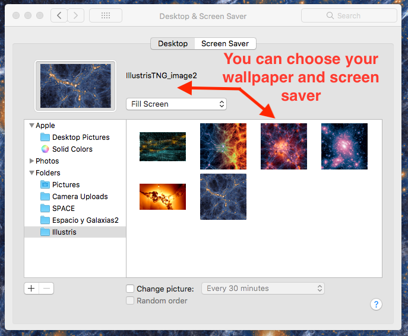Choose whichever wallpaper your want!
Step 3 - Preferences
Add hot corners and spaces
Step 3 - Preferences
And modify your dock
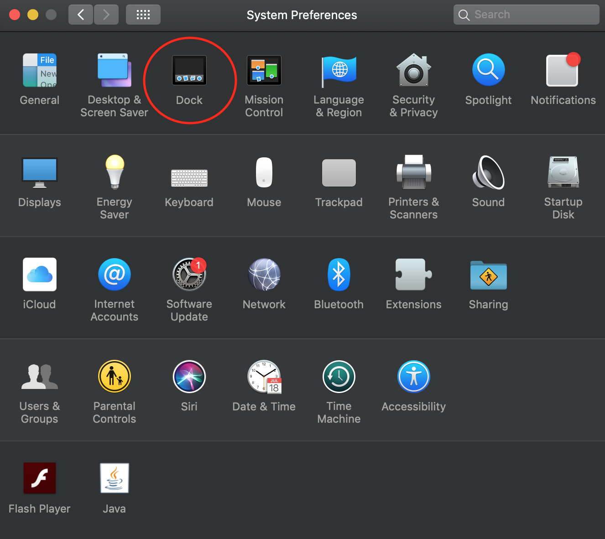Step 3 - Preferences
And modify your dock

Step 4 - Set up printer

The next step is to setup the printer!
Step 4 - Set up printer
- Located on the 9th floor
- IP address: 129.59.116.250
Steps ...
Step 4 - Set up printer
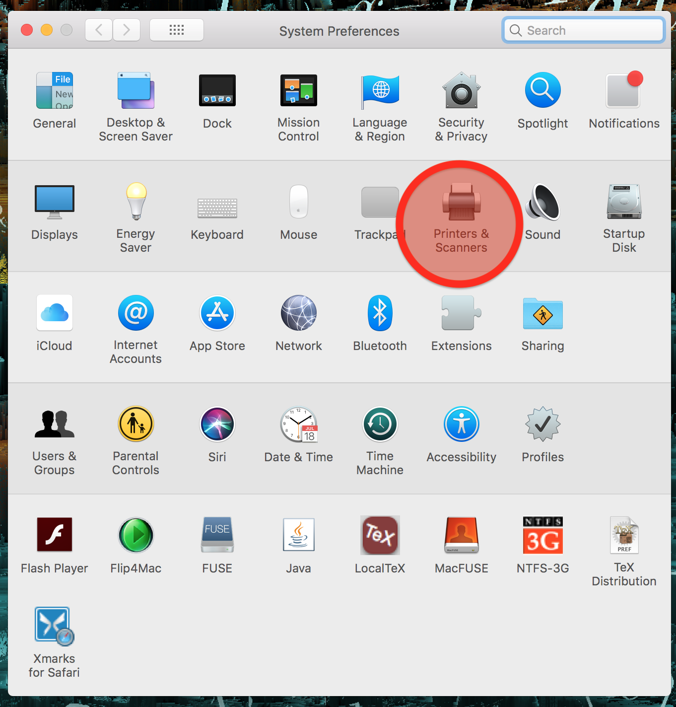- Go to "Printers and
scanners" in preferences - Click the "+" button in the
lower-left corner - Go the IP tab
- Put in the IP address
shown below - Protocol: HP Jetdirect-
Socket (not IPP) - Click "Add"
Step 4 - Set up printer
The printer is now installed!
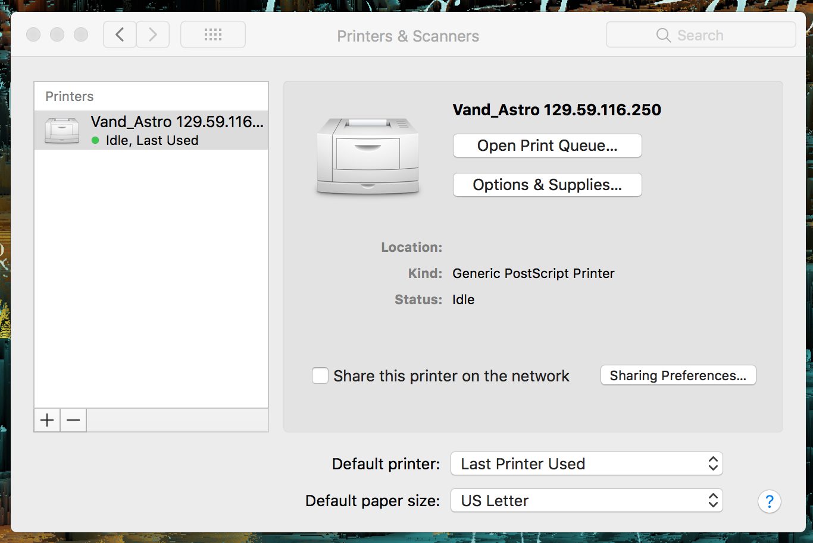 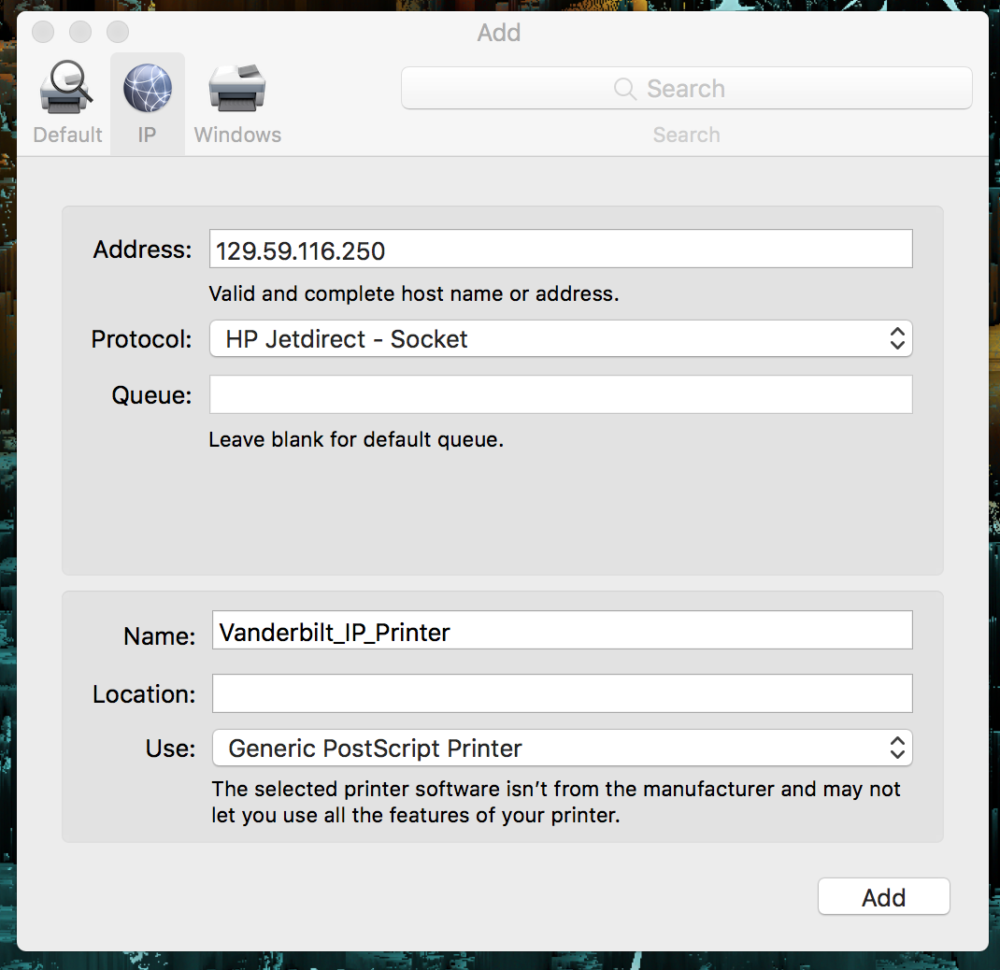Step 4 - Set up printer
Make sure to configure your printer to use duplex printing!
- Open a PDF
- Click "Print"
- Then select "Layout"
- Choose "Two-sided"
- Print...